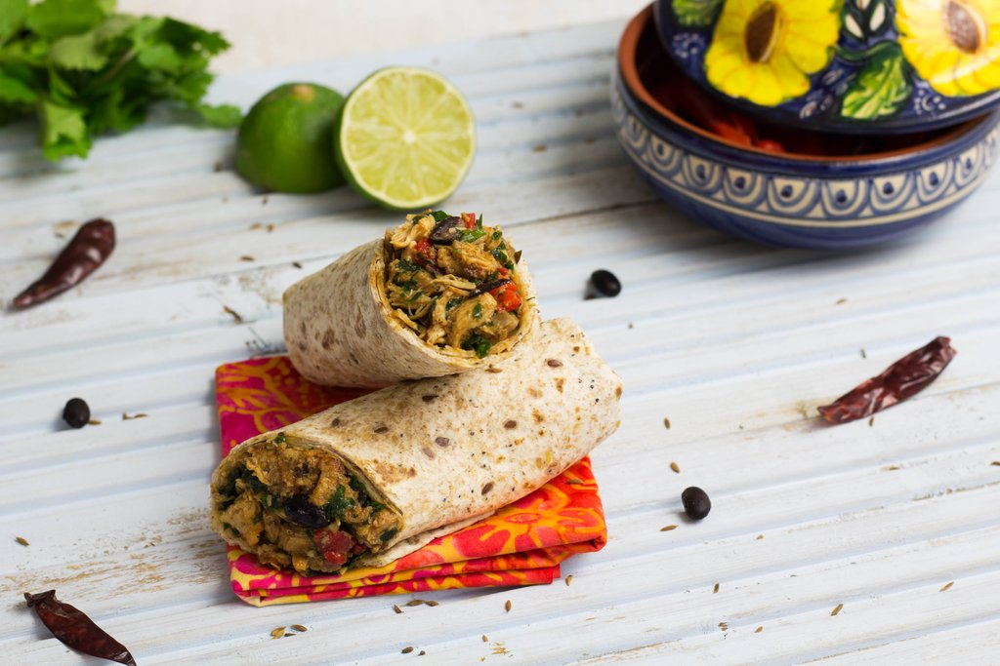
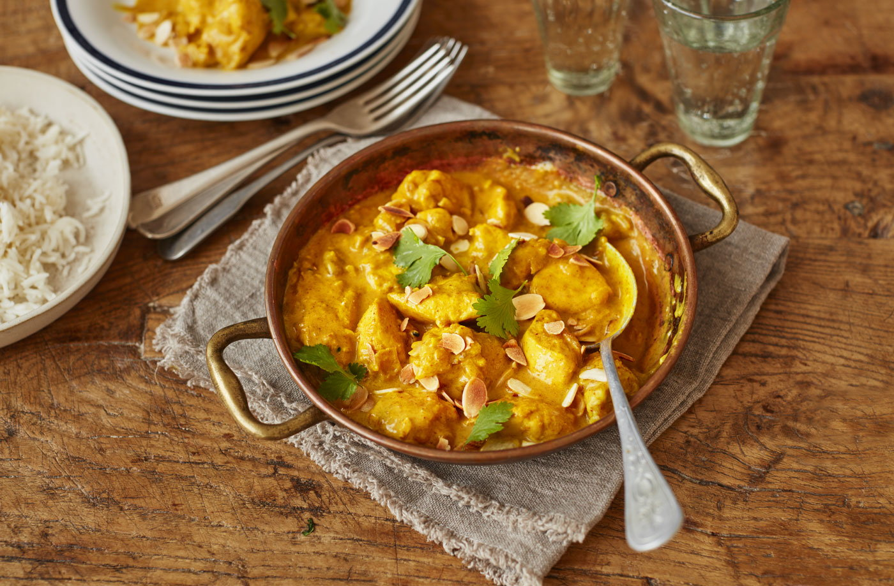

It's time to choose what to cook
Choose a recipe to rescue your chicken and start cooking!

Chicken burrito
Yes, let's try it!

Chicken korma
Yes, let's try it!
Previous
Next
Chicken korma
Ingredients:
- 300g chicken breast fillets
- 2 tbsp sunflower or vegetable oil
- 20g butter
- 1 brown onions, coarsely grated or very finely chopped
- 2 tsp ginger and garlic paste
- 1 tsp ground cumin
- 1 tsp ground coriander
- 1 tsp ground turmeric
- ¼ tsp mild chilli powder
- 1 tbsp mango chutney or 1 tsp caster sugar
- 150ml chicken stock
- 50ml coconut cream
- 1-2 tbsp toasted flaked almonds, to garnish (optional)
- fresh coriander leaves, to garnish (optional)
- basmati rice, cooked to pack instructions, to serve
Method:
- Cut each chicken breast into small chunks and season with ground black pepper.
Heat 1 tbsp oil in a large nonstick frying pan or wok and fry the chicken over a medium-high heat for 5-6 mins, turning occasionally.
Transfer the chicken to a plate and return the pan to the heat.
Keep the chicken warm by covering in foil.
- Add the remaining oil, butter and onions to the pan and cook over a medium heat, stirring often, for 10 mins, or until the onions are soft and lightly browned.
Stir in the ginger, garlic paste and ground spices and cook, stirring continuously, for a further 1 min.
- Add the mango chutney and stock to the spiced onions and bring to a simmer.
Cook for 5 mins or until the liquid has reduced by roughly half, stirring regularly.
- Return the chicken to the pan with the onions, add the cream and simmer gently, stirring occasionally, for 5-6 mins, until the chicken is piping hot and cooked through.
Add a splash of water to loosen the sauce if necessary.
- Garnish the curry with toasted flaked almonds and scatter with fresh coriander, if you like.
Serve with freshly cooked rice.
Chicken burrito
Ingredients:
- 1 tbsp vegetable oil
- 1 red or white onion , or 4 spring onions, chopped
- 400g mixed vegetables of your choice (we used carrots, red pepper and sweetcorn)
- 200g leftover chicken , chopped into small chunks
- 2 x 250g packs ready-cooked lime & coriander rice
- 400g can red kidney beans
- 6 large wraps
- 1 avocado, chopped
- 100g grated cheddar
- 1 egg, beaten
- Sour cream, to serve (optional)
Method:
- Heat the oil in a large pan. Add the onion and cook for 5 mins until soft, then add your chosen veggies and continue cooking for another 5-10 mins or until tender. Add the leftover meat, the rice and beans, along with the sauce from the can. Stir everything together and cook for 5 mins until piping hot.
- Heat another frying pan, or a griddle pan, until hot, and heat oven to 140C/120C fan/gas 2. Now assemble the burritos. Warm a wrap for 10 secs on the hot pan (keep the pan hot, you’ll need to use it again).
- Pile roughly a sixth of the rice mixture onto the centre of the wrap. Top with a little avocado and some cheese, then brush beaten egg around the edge. Fold the ends over the filling, then fold in the sides, like an envelope.
- Flatten a little to a parcel, then place, seam-side down, in the hot pan. Cook for 2 mins until the underside has sealed shut and is toasted a golden brown, flip over and cook for a few mins more.
- Keep the burrito warm in the oven while you continue assembling and cooking the remaining burritos. Serve with soured cream, if you like